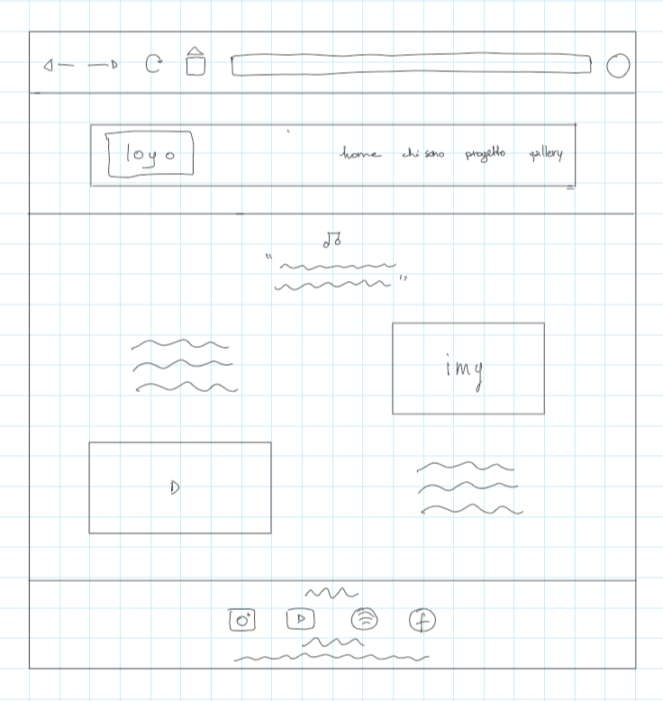

DOCUMENTAZIONE
ABSTRACT
Ho realizzato questo sito con lo scopo di promuovere il progetto da solista di Davide Manstretta, cantautore, musicista e produttore. In particolare mi sono concentrata sull'illustazioone del processo creativo dell'artista e sulla creazione di una brand identity. Il target è la fascia giovanile compresa tra i 20 e i 35 anni, appassionati di musica e in cerca di nuovi artisti da ascoltare.
PROJECT MANAGEMENT PLAN
BENCHMARKING
Obbiettivi
Il sito si propone di promuovere l'artista DavidEmme e la sua prima canzone, stabilire una brand identity e illustrare il processo creativo dell'artista.
Target Utente
Il target utente sono giovani tra i 20 e i 35 anni, nella zona geografica del piacentino-parmense, appassionati di musica e in cerca di nuovi artisti da esplorare
Competitors
Per l'analisi dei competitors ho scelto due artisti della scena piacentino-parmense, le band "Cani Della Biscia" (target over 25) e "I Segreti" (target under 25). Entrambe le band non hanno un sito ma sono attive su social come instagram e facebook dove promuovono eventi a cui partecipano e la loro musica, tramite foto e video, tuttavia non si focalizzano sullo stabilire una brand identity (es. tramite la grafica) o nel condividere il processo creativo dietro alle proprie canzoni.
STRUTTURA E LAYOUT
Architettura del sito

Wireframe
Home
Chi sono
Progetto
Gallery
Documentazione
Look and Feel
Per quanto riguarda le scelte grafiche sono partita dai materiali forniti dallo stesso artista, ovvero le immagini e il font del logo (lo stesso del canale youtube), per la palette ho estratto i colori (#594036, #F8E4CB), usati per il sito e il logo, dall'immagine di profilo, per creare continuità, ho inoltre utilizzato tre font: "Roboto Serif", "Roboto sans-serif" e "Indie Flower", quest'ultimo è stato scelto appositamente in corsivo per evocare la scrittura a mano e creare continuità tra il testo della canzone, il nome d'arte del cantautore e il titolo della canzone, ho inoltre utilizzato varie icone per rendere il sito più dinamico e creativo.
LINGUAGGI E STRUMENTI
Questo sito è stato costruito tramite i linguaggi HTML5 e CSS, con il programma Sublime Text 2, a supporto ho utilizzato Bootstrap e W3schools, in particolare per inserire il video youtube nella home e per creare la gallery e il menu. Ho inoltre utilizzato Fontawesome per le icone, Google Font per i font e Adobe Color per estrarre la palette dalle immagini che appartengono a Francesco Zucchi. Ho inoltre utilizzato Canva per creare il logo e il post per la promozione e OneNote per realizzare gli schemi di architettura del sito e i wireframe. infine, il sito è stato pubblicato tramite GitHub.
COMMUNICATION STRATEGY
Background
Analizzando la scena musicale piacentino-parmense ho constatato molta promozione di eventi (da Cani Della Biscia) di album e canzoni tramite video e post (da I Segreti), i principali social utilizzati sono Facebook e Instagram, che si rivelano piattaforme utili per la promozione degli artisti. In generale ho notato un buon livello di engagement con il pubblico, tuttavia ho constatato lo scarso uso della grafica per stabilire una brand identity e poca condivisione del processo creativo degli artisti.
Obbiettivi Comunicativi
L'obbiettivo del sito è di far conoscere l'artista e il suo progetto, coinvolgendo gli utenti che già seguono l'artista e registrandone nuovi.
Target Audience
Il target utente sono giovani tra i 20 e i 35 anni, nella zona di Piacenza e Parma, appassionati di musica o in cerca di nuovi artisti da conoscere, target secondari possono essere utenti over 35 della stessa zona geografica. Questi target vengono raggiunti in prevalenza tramite social come instagram (per gli utenti tra i 20 e i 30 anni) e facebook (per gli uteni tra i 25 e i 35 anni).
Messaggio
Il sito si propone di essere un approfondimento sull'artista e il suo progetto, dando all'utente accesso a contenuti che non sono disponibili sui social, come foto, identità dei collaboratori e concept di nascita della canzone. Oltre ad offrire questi nuovi contenuti il sito si propone di fidelizzare gli utenti già attivi sui social e di attirarne nuovi, facendoli sentire partecipi al progetto e creando uno spazio che ispiri creatività.
Promozione
il sito è stato promosso tramite un post sui profili instagram e facebook dell'artista, graficamente in linea con il sito, che promuove il lancio di quest'ultimo.
Valutazione dei risultati
Nel suo piccolo il sito ha avuto un discreto successo, i post hanno superato i 20 like e il sito ha registrato più di 30 utenti. Considerando il seguito limitato dell'artista ritengo sia un buon risultato.